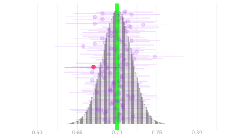
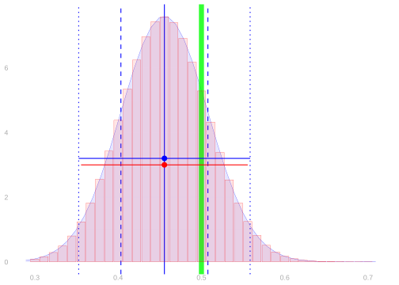
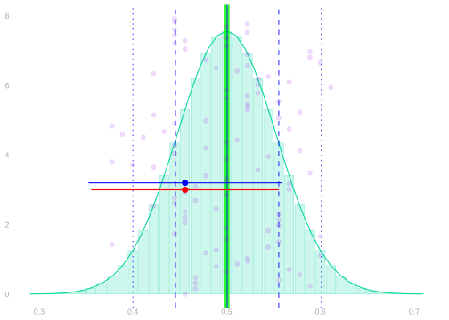
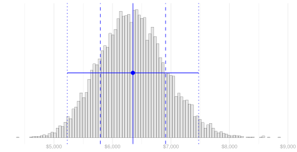
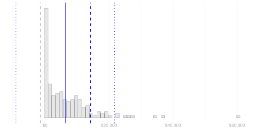

Normal Approximation and Sample Size Calculation
The Normal Distribution


The normal distribution is a parametric family of distributions involving two parameters.
- Its mean, \theta.
- Its standard deviation, \sigma.
We say a random variable X is normally distributed with mean \theta and standard deviation \sigma …
… if the probability that it’s in an interval [a,b] is given by this integral of its probability density. P_{\theta,\sigma}(X \in [a,b]) = \int_a^b f_{\theta,\sigma}(x)dx \qfor f_{\theta, \sigma}(x) = \frac{1}{\sqrt{2\pi}\sigma}e^{-\frac{(x-\theta)^2}{2\sigma^2}}
We have to talk about the probability that it’s ‘in an interval’ rather than that it ‘takes a value’ because …
… the probability it actually takes on any particular value is x zero: it’s an integral from x to x.
Calibration Using Normal Approximation


- Calibrating interval estimates using normal approximation is easy.
- You estimate the standard deviation of your point estimator.
- You go out ± 1.96 (estimated) standard deviations from your point estimate.
\text{interval estimate} = \hat\theta \pm 1.96 \hat\sigma
- We’re choosing our interval’s width essentially the same way we always have.
- We’re still using the middle 95% of an estimate of the sample distribution.
- It just looks different because we have a convenient formula for that width.
- Above left, you can see two interval estimates superimposed on the sampling distribution of a sample proportion.
- The red one is calibrated using the binomial as before.
- The blue one is calibrated using normal approximation.
- Above right, you can see the binomial and normal sampling distribution estimates these are based on.
When This Works


This works if three things are true.
- The sampling distribution needs to be in the right place, i.e. centered on the estimation target.
- This is called unbiasedness of our point estimator.
- Most of the estimators we’ll talk about in this class are unbiased or almost unbiased.
- The sampling distribution needs to be approximately normal.
- The CLT tells us this tends to happen, especially for large n.
- We’ll talk about how accurate it is next week. For most of the estimators we’ll study, you can take it as a given.
- The estimated sampling distribution has approximately the right width.
- This amounts to getting a good estimate of our point estimator’s standard deviation.
- We’ll work on this, again for the sample proportion, later today. And for other estimators throughout the semester.
- It is, however, a bit of a pain. That’s one reason you might prefer the bootstrap.
A Proportion when Sampling with Replacement



- When we sample from a binary population with replacement, our sample proportion’s distribution is Binomial.
- And we can estimate that distribution by plugging our sample proportion into the Binomial formula.
- But its normal approximation tends to be very good, so we can get away with estimating that instead.
- Its standard deviation is the one we worked out last class.
\begin{aligned} \text{normal approximation} & \ f_{\theta,\sigma}(x) \qfor \sigma^2 = \frac{\theta(1-\theta)}{n} \\ \text{corresponding estimate} & \ f_{\hat\theta, \hat \sigma}(x) \qfor \hat\sigma^2 = \frac{\hat \theta(1-\hat \theta)}{n}. \end{aligned}
- Pictured: three Binomial distributions with their normal approximations.
- These are the distributions of the sample proportion when we draw a samples of size 10, 30, and 90 …
- … with replacement from a binary population in which the proportion of ones is \theta=.5.
A Proportion when Sampling without Replacement



- Sampling without replacement from a binary population, our sample proportion is Hypergeometric.
- We can estimate it by plugging our sample proportion into the Hypergeometric formula.
- But again, its normal approximation is very good, so we can estimate that instead.
- This shows where we go wrong using the Binomial—or equivalently the bootstrap.
- When \color{#404040}n is a meaningful fraction of \color{#404040}m, the Binomial is too wide.
- Its standard deviation is the Binomial’s times \color{#404040}\sqrt{\frac{m-n}{m-1}}. A homework problem.
- When we’re sampling half our population, i.e. n=m/2, that’s roughly \color{#404040}\sqrt{1/2} \approx .7.
\begin{aligned} \text{normal approximation} & \ f_{\theta,\sigma}(x) \qfor \sigma^2 = \frac{\theta(1-\theta)}{n} \times \frac{m-n}{m-1} \\ \text{corresponding estimate} & \ f_{\hat\theta, \hat \sigma}(x) \qfor \hat\sigma^2 = \frac{\hat \theta(1-\hat \theta)}{n} \times \frac{m-n}{m-1}. \end{aligned}
- Pictured: three Hypergeometric distributions with their normal approximations.
- Sample proportions for samples of size 10, 30, and 90 …
- … drawn without replacement from a binary population twice the size with \color{#404040}\theta=.5.
Using Normal Approximation



- What makes all this work is that we’re using good estimates of our estimator’s standard deviation.
- If we have a formula for the estimator’s standard deviation, this is usuallly not so hard.
- We estimate whatever population summaries show up in the formula and plug them in.
Thinking Speculatively About Intervals

- Suppose we’re not satisfied with this level of precision, so we’re going to collect more data.
- Suppose we want our interval to be \pm .01 instead of \pm 0.037.
- How many people, in total, do we need to call? We can use the normal approximation to figure that out.
\hat \theta \pm 1.96\sigma_n \qfor \sigma_n = \sqrt{\frac{\theta (1-\theta)}{n}} \qqtext{ is } \hat\theta \pm .01 \qqtext{if} 1.96\sqrt{\frac{\theta (1-\theta)}{n}} = .01
- Now all we have to do is solve for n. And, since we don’t know \theta, use our best guess, \hat\theta=0.68.
n = \frac{1.96^2 \ \hat\theta (1-\hat\theta)}{.01^2} \approx 8000
The National Supported Work Demonstration


| n | \hat \mu | sample SD |
|---|---|---|
| 185 | 6300 | 7900 |
- The National Supported Work Demonstration was an experimental program in the 1970s that provided job training and other services.
- Here ‘experimental’ doesn’t just mean untested. It was run as a big experiment.
- From a population of eligible people, they drew a sample of size 445 to participate.
- To help estimate the impact of the program, participants were randomized into two groups.
- The ‘treated’ group received the training and services.
- The ‘control’ group did not.
- Today we’ll look at the treated group only: 185 people.
- A year or two after the program ended, they looked at the incomes of the people who’d been treated.
- The average within the sample was about $6300 per year. In 1978 dollars.
- A dollar in 1978 was worth about what $5 is today.
- So adjusting for inflation, that’s an in-sample average of about $31700.
- But the sample was relatively small. And, as a result, the interval estimate is pretty wide.
\begin{aligned} \mu &\in 6300 \pm 1100 \approx [5200, \ 7500] &&\qqtext{is a 95\% confidence interval in 1978 dollars} \\ &\in 31700 \pm 5600 \approx [26100, \ 37400] &&\qqtext{adjusted for inflation} \end{aligned}
Activities


| n | \hat \mu | sample SD |
|---|---|---|
| 185 | 6300 | 7900 |
- Use the information in this table and the formulas to calculate a 95% interval based on normal approximation.
- Compare it to the interval we got using the bootstrap sampling distribution for calibration.
- Suppose we want to know the population mean to within $500 (1978 dollars).
- How can we resize our study to make that happen?
- We could run a second wave, drawing more people from the same population exactly as before, to get a larger sample like the one we have.
- What sample size would we need to be able to get a 95% confidence interval this accurate?